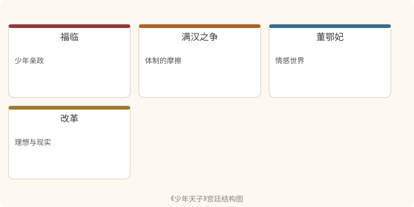

少年天子
一、基本信息
| 作者 | 凌力 |
|---|---|
| 成书/出版 | 第三届茅盾文学奖获奖作品（中国作家网官方名单 C012：第三届1985—1988、北京十月文艺出版社；出版具体日期待核） 历届茅盾文学奖获奖作品一览（中国作家网）（官方文学机构） |
| 国别/地区 | 中国 |
| 时代 | 现当代 · 当代 |
| 体裁 | 长篇历史小说 |
| 语言 | 汉语（白话） |

《少年天子》宫廷结构图（主题·结构图）
二、创作背景
中国作家网官方名单（C012）：第三届（1985—1988）茅盾文学奖获奖作品《少年天子》凌力。
题材：清初顺治帝的改革努力与困境（通说待核）。
三、内容脉络
顺治帝福临的亲政、汉化改革与情感世界（通说待核）。
宫廷与满汉冲突的叙事（通说待核）。
四、主要人物表
| 人物 | 身份 | 说明 |
|---|---|---|
| 福临（顺治） | 少年天子 | 主角（通说待核） |
| 董鄂妃 | 宠妃 | 情感线（通说待核） |
五、主题与艺术特点
- 少年天子的理想与体制的摩擦（通说）。
- 满汉融合的阵痛（通说）。
- 历史小说的心理化（通说）。
六、影响与评论
- 中国作家网官方名单：第三届茅盾文学奖获奖作品、北京十月文艺出版社（C012）。
历届茅盾文学奖获奖作品一览（中国作家网）（官方文学机构） - 历史小说的茅奖谱系：与《张居正》等构成当代历史小说序列（通说）。
历届茅盾文学奖获奖作品一览（中国作家网）（官方文学机构）
七、阅读建议
难点
- 清初典章与满语称谓注释。
- 历史与虚构的边界。
- 《少年天子》（北京十月文艺出版社，C012 官方名单口径）。
对照《张居正》：明清两代改革者的叙事。
八、待核实
- 顺治帝情节与史实对应核对。
- 凌力生卒年（1942—2018说）与清史研究背景待核。
- 初版年份核对。
本页主要来源
凌力的其他收录作品：少年天子